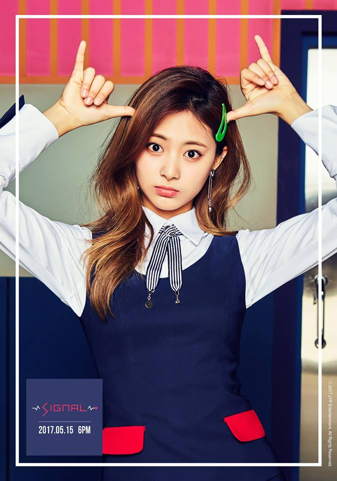

T Z U Y U

Stage Name: Tzuyu
Birth Name: Chou Tzuyu (周子瑜)
Korean Name: Joo Ja Yoo (주자유)
Nationality: Taiwanese
Position: Lead Dancer, Vocalist, Visual, Maknae
Birthday: June 14, 1999
Zodiac Sign: Gemini
Official height: 170 cm (5’7″) / Approx. Real Height: 172 cm (5’8″)*
Weight: 48 kg (106 lbs)
Blood Type: A
Tzuyu facts:
She was born in Tainan, Taiwan.
Tzuyu has an older brother.
Tzuyu’s English name is Sally Chou.
She was discovered by JYP at the MUSE Performing Arts Workshop in Tainan in 2012,
and went to South Korea on November 15 to start her training.
She sleeps the earliest and wakes up the earliest.
Her nicknames are “Chocolate” because of her dark skin, “Chewy” and “Yoda”.
Tzuyu likes Yoda (“Star Wars”) and can impersonate him well, that’s why her nickname is Yoda.
Tzuyu’s family has a dog named Gucci, her mom’s friend named it after the brand.
Tzuyu likes the drink Choco-ae-mong (초코에몽) (Chocolate milk).
Tzuyu likes tonkatsu and kimbap.
Tzuyu likes spring the most. Since she gets cold easily, winter is scary.
Tzuyu’s favorite color is indigo.
Tzuyu often sleeps with her eyes open.
According to the members Tzuyu sleeps early and wakes up first.
Tzuyu has most confidence in her eyes and chin.
Chaeyoung and Tzuyu often sing PPAP. (Pen-Pineapple-Apple-Pen – PPAP Song)
Tzuyu is close to Rose (Black Pink).
Tzuyu said that, if she were to be born again, she wants to be born as a short girl.
Other members see Tzuyu to be a girl who doesn’t seem like she would care about her boyfriend but she would.
She starred in GOT7’s “Stop Stop It” MV and miss A’s “Only You” MV.
Tzuyu prefers to hear “She’s so talented” instead of “She’s so pretty”.
Tzuyu’s ideal type: “Someone who understands the importance of filial piety;
Someone who loves me more; Someone who likes puppies; Someone who eats well; Someone who can approach me first”
Learn More